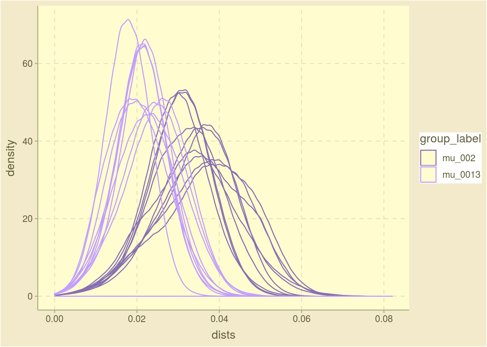

4 Sets of different simulations
The true goal is to compare sets of simulations where some parameter was varied to each other. Initially due to computational restraints (upgrades needed to yasss as well as some caching facilities), we will restrict this to comparisons of small numbers of simulations (~30) grouped into 2 to 4 groups. The goal here is to show how the distributions and the metrics diverge between the groups.
Four data structures are used to track all this:
- the all_sim_results data.frame - see the few_sim_chunk
- the group_membership data.frame: sim_id, group_id, group_label and group description
- arg_sets: A list indexed by group_id. Each element is a list with three elements:
- group_label: The label used to describe the group
- group_desc: The full description of the group
- args: The list of arguments used with do.call to run sim_pop
The following graphs and tables present a summary of a set of simulations that can be divided into 2 groups.
| group_label | avg_hd | n_avg_hd |
|---|---|---|
| mu_002 | 0.0334 | 0.0000669 |
| mu_0013 | 0.0216 | 0.0000432 |

Figure 4.1: Density plot of the pariwise distances in the last generation
| Sim | 0% | 10% | 20% | 30% | 40% | 50% | 60% | 70% | 80% | 90% | 100% |
|---|---|---|---|---|---|---|---|---|---|---|---|
| mu_002 | 0 | 0.02 | 0.026 | 0.028 | 0.03 | 0.034 | 0.036 | 0.038 | 0.042 | 0.046 | 0.082 |
| mu_0013 | 0 | 0.012 | 0.016 | 0.018 | 0.02 | 0.022 | 0.024 | 0.026 | 0.028 | 0.032 | 0.058 |
| group_label | Argument | Value |
|---|---|---|
| mu_002 | Number of Ancestors | 1 |
| mu_002 | Sequence Length | 500 |
| mu_002 | r0 | 2 |
| mu_002 | Number of Generations | 9 |
| mu_002 | Minimum Population Size | Inf |
| mu_002 | Mutator Function | mutator_uniform_fun |
| mu_002 | Mutator: mu | 0.002 |
| mu_002 | Fitness Evaluator | fitness_evaluator_uniform_fun |
| mu_002 | Additional Fitness Evaluator Arguments | None |
| mu_0013 | Number of Ancestors | 1 |
| mu_0013 | Sequence Length | 500 |
| mu_0013 | r0 | 2 |
| mu_0013 | Number of Generations | 9 |
| mu_0013 | Minimum Population Size | Inf |
| mu_0013 | Mutator Function | mutator_uniform_fun |
| mu_0013 | Mutator: mu | 0.00133333333333333 |
| mu_0013 | Fitness Evaluator | fitness_evaluator_uniform_fun |
| mu_0013 | Additional Fitness Evaluator Arguments | None |
| group_label | Gen. Num. | n | Dist. to Ances. | Normalized Dist. | Fitness Score | Min. Fitness Score |
|---|---|---|---|---|---|---|
| mu_002 | 0 | 10 | 0.000000 | 0.0000000 | 0.4900067 | 0.1078886 |
| mu_002 | 1 | 20 | 1.400000 | 0.0028000 | 0.5757264 | 0.0062575 |
| mu_002 | 2 | 40 | 2.600000 | 0.0052000 | 0.4978187 | 0.0074974 |
| mu_002 | 3 | 80 | 3.787500 | 0.0075750 | 0.5076845 | 0.0172826 |
| mu_002 | 4 | 160 | 4.743750 | 0.0094875 | 0.4793084 | 0.0036512 |
| mu_002 | 5 | 320 | 5.734375 | 0.0114688 | 0.4918998 | 0.0020557 |
| mu_002 | 6 | 640 | 6.715625 | 0.0134312 | 0.5036326 | 0.0018455 |
| mu_002 | 7 | 1280 | 7.685937 | 0.0153719 | 0.5004170 | 0.0000675 |
| mu_002 | 8 | 2560 | 8.686328 | 0.0173727 | 0.4940171 | 0.0000326 |
| mu_002 | 9 | 5120 | 9.681055 | 0.0193621 | 0.5013412 | 0.0002522 |
| mu_0013 | 0 | 10 | 0.000000 | 0.0000000 | 0.4482866 | 0.1082937 |
| mu_0013 | 1 | 20 | 0.500000 | 0.0010000 | 0.4940136 | 0.0013722 |
| mu_0013 | 2 | 40 | 1.350000 | 0.0027000 | 0.5361688 | 0.0326238 |
| mu_0013 | 3 | 80 | 2.062500 | 0.0041250 | 0.4558884 | 0.0051769 |
| mu_0013 | 4 | 160 | 2.731250 | 0.0054625 | 0.5376763 | 0.0183150 |
| mu_0013 | 5 | 320 | 3.378125 | 0.0067562 | 0.5204569 | 0.0009316 |
| mu_0013 | 6 | 640 | 4.056250 | 0.0081125 | 0.5201966 | 0.0006530 |
| mu_0013 | 7 | 1280 | 4.722656 | 0.0094453 | 0.4972584 | 0.0005616 |
| mu_0013 | 8 | 2560 | 5.398047 | 0.0107961 | 0.5096068 | 0.0007339 |
| mu_0013 | 9 | 5120 | 6.062109 | 0.0121242 | 0.5025333 | 0.0000039 |